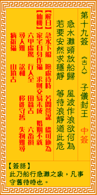

观音灵签第十九签 【子仪封王】 |
 | |||
急水滩头放艇时 狂风作浪欲何为 待他浪静风停後 稳载船归过不危 |
||||
| 【吉凶】 | 下中签 | 【宫位】 | 辰宫 | |
| 【签语】 | 此卦船行急滩之象，凡事守旧待时也 | |||
| 【解曰】 | 急水下船 险处待时 若问营谋 不可施为 | |||
| 【仙机】 | 此签家宅作福，自身作福，求财未成，交易未成，婚姻不就，六甲虚惊，行人至，田蚕吉，六畜损，寻人难，讼和，移徙守旧，失物难寻 ，病祈福，山坟吉。 | |||
| 【详解】 | 在天候恶劣之时欲驾小船，然而此刻狂风大浪，能有什么作为呢?等待风止浪歇之后，相信才可以平安地满载而归。 急水放船，险行待时，若问营谋，时至可为。此签行舟浪淘之象，凡事守旧则吉。 行舟浪淘之象。亦即是险境者。要之。君尔应知目下宜守旧。愿遵守静则吉。妄为则凶也。杨雄之仕王莽之朝为大夫。何以能胜大任。如在急水滩头放水之险行。待时若问营谋。时至方可为。千万叵轻举妄动。 此签有”自甘堕落”之意。意味当事人，勿随波逐流。有些人为了取悦或取信对方，不惜昧着良心，一味巴结。这种矫饰的作为，容易引起他人的反感与不齿，纵使爬上高处，地位也难以稳固。凡事应坚守道德、无愧于心，靠自己努力打拚。虽然无法一步登天，但辛苦耕耘定有所成，且凭自己的实力所表现的成果，必可获得众人的肯定支持，声望不坠且难以撼动。另外，慎选合作对象也很重要。因此不论对方的人品、自我情绪管理、或待人接物方面，都是必须考虑在内的因素。 | |||
| 【典故】 | 郭子仪是唐朝大将军，也是历史上著名的大将。安禄山和史思明叛乱，郭子仪率军讨伐，常把敌人打得落花流水。六十余年征战，经过七 个皇帝，战绩累累，功劳显赫，后唐肃宗重用郭子仪，拜为副元帅；并晋封汾阳郡王，再领大军出征平乱。建中二年（公元七八一年）郭子仪病重逝世，郭寿八十五岁。 | |||